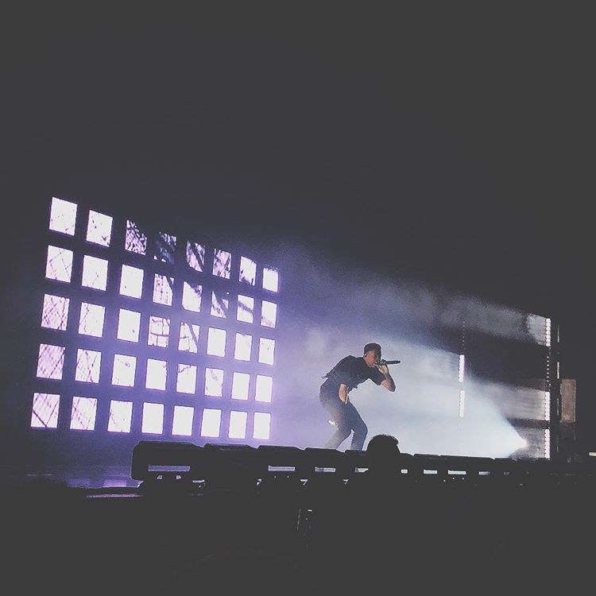
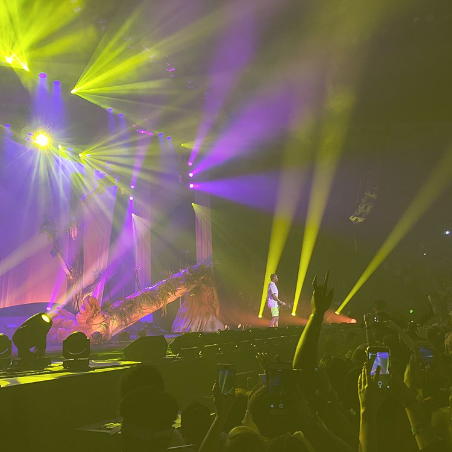

In the beginning of February I got a seerious case of FOMO. My best friend was in Dallas and had been traveling to Austin and just taking in all that those cities had to offer. I remember telling myself at the beginning of the year, "I'm going to start traveling more and just experiencing more by doing things outside of my comfort zone." After midnight on NYE I did the whole cliche thing and ran outside with luggage and screamed my wish out loud.
That same day when the fomo hit, I started looking at concerts in my neighboring cities. Saw a couple of good ones that I got tickets to like Milo & JPEGMAFIA, and Injury Reserve. Hella stoked for these events. I also remembered the ongoing tour that Tyler, the Creator was doing in support of his album from last year, Flower Boy, which btw is DEFINITELY worth checking out. Tyler really solidifies a lot of his musical elements, from rap flow, production, and to just having a well balanced message behind his album. He really grew a lot as a musician over the past couple of years. Check out this review if you're interested.
But yeah so I saw he was playing in ATL so I decided to grab a ticket. Funny thing is, I was in ATL last year in January for a minute. That same friend took his girlfriend and I to checkout a Bernie Sanders speech and to explore some of the city, so there was def some nostalgia as I was driving through, and just remembering what/who I was obsessed with at the time.
So at 6 AM on Saturday I woke up, got my things together, and drove. It was raining the whole fucking way, to and from. 😑 I listened to both Flower Boy and Big Fish Theory twice to prep for the concert. As I was driving down, I couldn't help but feel so lucky to have the ability to do what I was doing. I wanted to do something, and I did it. I had all the resources to do exactly what I wanted to do. I felt both powerful by my ability to do so and humbled because of where I come from and where I grew up.
As soon as I got there, I hit up the Georgia Aquarium where I got to see a Beluga Whale for the first time in my life. I saw different types of jellyfish, whale sharks, penguins, sea otters, and other amazing animals. Beluga Whales have a special place in my heart, always been a fan of them ever since I was little.
Then hit up The Vortex in Little Five Points, which I visited last year. Had some drinks and overheard a father and daughter reuniting next to me at the bar. One of the highlights from eavesdropping on their conversation was, "I haven't seen you eat tater-tots since you were five years old."
Got a couple of records in some of the shops like Criminal Records in the neighborhood.
And then drove to a motel near the concert venue and made my way to the concert. I have no idea why I've waited this long to go to one of Tyler/Vince's concerts. It was incredible and completely shot the hearing in my left ear, haaa. Next day I woke up early and drove back.
All in all, it was a small but fun trip. Excited to do this for a different city. 😊
Some of the pics from that day.
Vince Staples

Tyler the Creator
